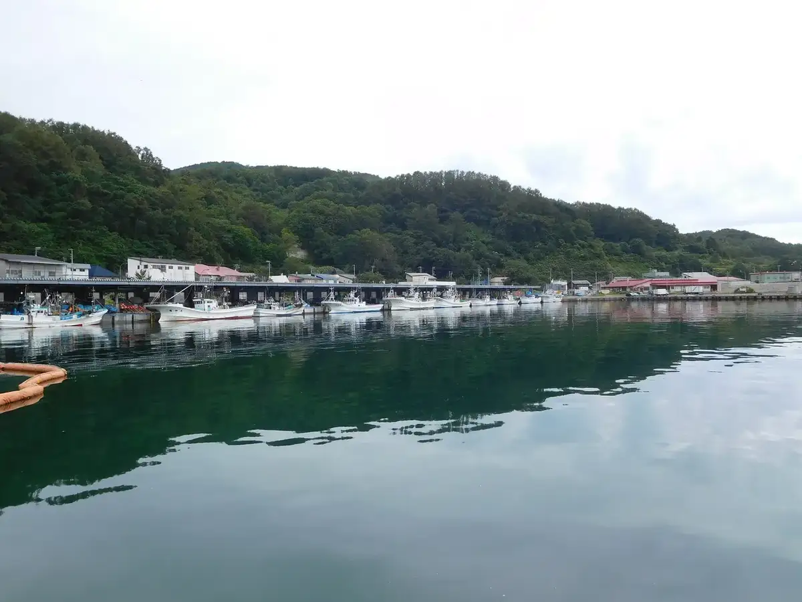
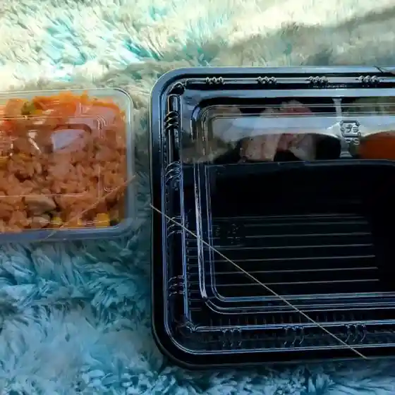
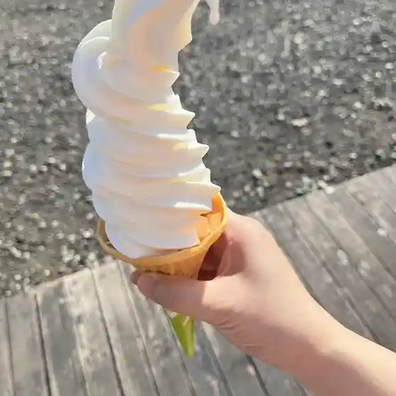
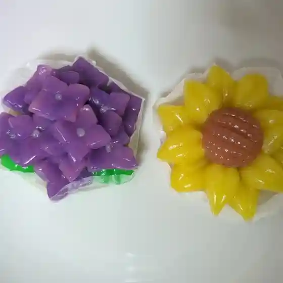
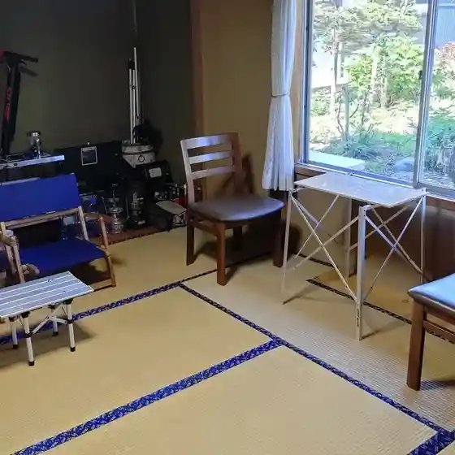
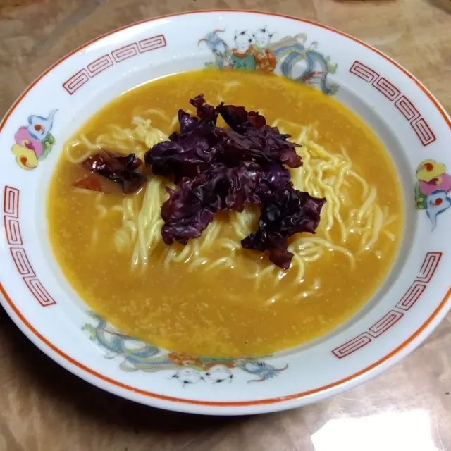
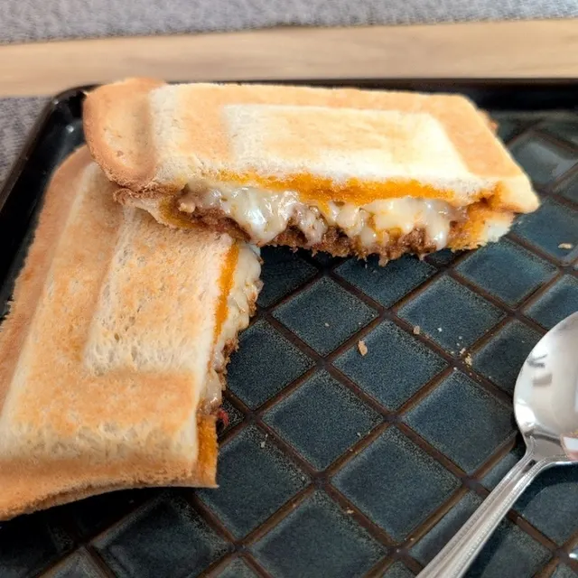
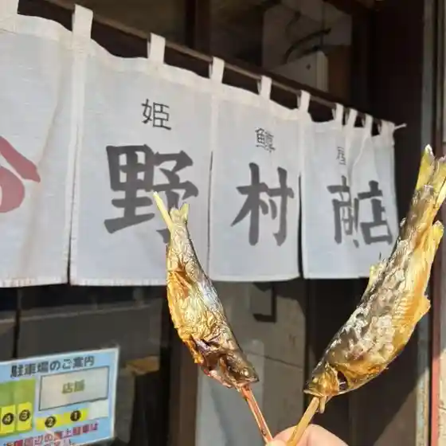
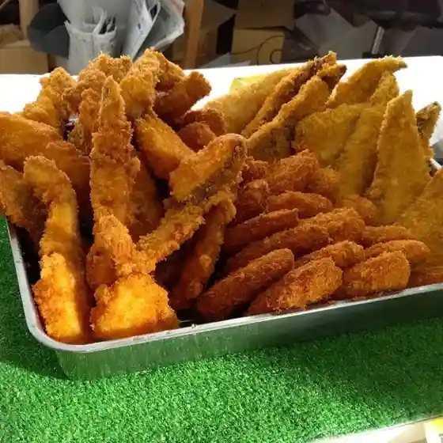

Furubira
Furubira · Hokkaido
Furubira
Highlighted on the Hokkaido map.

Stay
Dining
うさぎ屋弁当店

Usagi Ya Bentou Mise
poRto kitchen

Porto Kitchen
凪の詩

Nagi No Shi
癒しの森COFFEE/ライダーズカフェ積丹ブルーINN

Iyashi No Mori Coffee/ Raidaazukafe Shakotan Buruu Inn
東しゃこたん漁業協同組合生産部直売所

Higashi Shakotan Gyogyou Kyoudoukumiai Seisan Bu Chokubai Tokoro
喫茶それなり

Kissa Sorenari
姫鱒屋 野村商店

Himemasu Ya Nomura Shouten
丸八田中商店

Maruhachi Tanaka Shouten
いちい鮨
Ichii Sushi
えん
En
中央旅館
Chuuou Ryokan
しおかぜ
Shiokaze
まる万食堂
Maru Man Shokudou
港寿し
Minato Hisashi Shi
おやつ屋 medetai
Oyatsu Ya Medetai
清水鮮魚店
Shimizu Sengyoten
民宿堀
Minshuku Hori
大島水産
Ooshima Suisan
ホーマック ニコット 古平店
Hoomakku Nikotto Furubira Mise
カネト水産
Kaneto Suisan
あまやどり
Amayadori
道の駅ふるびら たらこミュージアム
Michi No Eki Furubira Tarako Myuujiamu
新家寿司
Shinke Sushi
日本海ふるびら温泉しおかぜ
Nihonkai Furubira Onsen Shiokaze